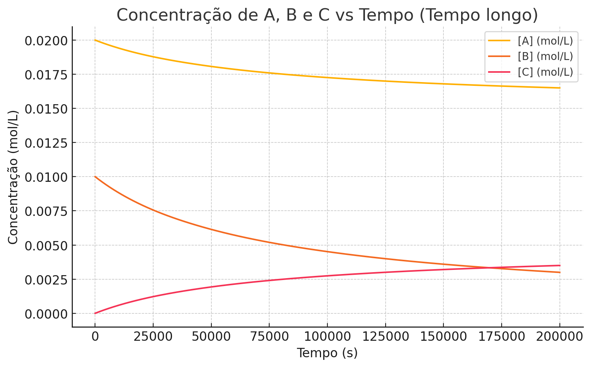

A norma técnica brasileira estabelece regras específicas para arredondamento de valores numéricos. Estas regras aplicam-se aos dígitos que vêm após a quantidade de casas decimais que se deseja manter.
Esta metodologia visa evitar tendências que surgiriam se números terminados em 5 fossem sempre arredondados para cima.
O Instituto Brasileiro de Geografia e Estatística possui regras complementares para apresentação de dados estatísticos:
Quando o primeiro dígito a ser eliminado está entre 0 e 4, o último dígito mantido permanece igual. Quando está entre 6 e 9, o último dígito mantido aumenta em 1.
Para o dígito 5: se vier seguido apenas de zeros, aumenta apenas se o último dígito mantido for ímpar. Se vier seguido de outros dígitos além de zero, aumenta sempre.
Abaixo é possível verificar o diagrama proposto por Linus Pauling. O diagrama ajuda a entender e "montar" a estrutura de cada elemento da tabela periódica (CUIDADO! Alguns elementos não obedecem rigorosamente a distribuição)
Um fóton é a partícula elementar da luz e de outras radiações eletromagnéticas. Cada fóton transporta energia, mas não tem massa de repouso.
Como a frequência \(f\) e o comprimento de onda \(\lambda\) estão relacionados pela velocidade da luz \(c\):
\[E = \frac{6,626 \times 10^{-34} \cdot 3,0 \times 10^{8}}{450 \times 10^{-9}} \approx 4,42 \times 10^{-19} \ \mathrm{J}\]
\[E = \frac{6,626 \times 10^{-34} \cdot 3,0 \times 10^{8}}{700 \times 10^{-9}} \approx 2,84 \times 10^{-19} \ \mathrm{J}\]
Quanto menor o comprimento de onda, maior a energia do fóton. Portanto, luz azul ou violeta possui fótons mais energéticos que a luz vermelha.
- Energia do fóton: \(E = h f = \frac{h c}{\lambda}\)
- Conversão para eV: \(E (\mathrm{eV}) = \frac{E (\mathrm{J})}{1,602 \times 10^{-19}}\)
- Fótons de menor comprimento de onda têm maior energia
Átomo de Hidrogênio
Energia
A energia em cada nível do átomo de Hidrogênio pode ser calculada através da fórmula abaixo:
\[ E_n = \frac{-13,6}{n^2} \]
onde \( E_n \) é a energia (em \(\text{eV} \) - elétron-Volt) no nível \(n\). É possível montar uma tabela com os valores das energias em função do nível, como segue abaixo:
| Nível |
Energia - \( \text{eV} \) |
| 1 |
-13,6 |
| 2 |
-3,4 |
| 3 |
-1,51 |
| 4 |
-0,85 |
| 5 |
-0,54 |
| 6 |
-0,38 |
| 7 |
-0,28 |
EXEMPLO: Calcule a energia quando um elétron salta do nível 4 para o nível 2.
A energia que queremos calcular pode ser representada como segue:
\[\begin{align*}
E &= E_2 - E_4 \\
&= -3,4 - (-0,85) \\
&= -3,4 +0,85 \\
&= -2,55 \,\, \text{eV} \\
\end{align*}
\]
Concentração, Densidade e Massa Específica
Concentração
É a quantidade de soluto (substância dissolvida) presente em uma determinada quantidade de solução.
É importante ressaltar que há vários modos de calcular/representar concentrações:
- Porcentagem em massa (m/m): Relação entre a massa do soluto e a massa da solução, expressa em percentagem.
Exemplo: Uma solução aquosa de NaCl a 10% m/m contém 10g de NaCl em 100g de solução.
- Molaridade (M): Número de moles de soluto por litro de solução.
Exemplo: Uma solução 1M de glicose contém 1 mol de glicose em 1 litro de solução.
- Molalidade (m): Número de moles de soluto por quilograma de solvente.
EXEMPLO: Qual a concentração em g/L de uma solução aquosa de NaCl que contém 58,5 g de NaCl em 500 mL de solução?
\[C=\frac{m}{V}=\frac{58,5 [g]}{500 [mL]}=\frac{58,5 [g]}{0,5 [L]}=117 [g/L] \]
Densidade e Massa Específica
Densidade é a relação entre a massa e o volume de uma substância e matematicamente pode ser escrita como:
\[ d = \frac{m}{V} \]
Massa específica é muitas vezes confundida com densidade mas, geralmente, é usado o termo para substâncias puras e a unidade de medida é \( g/cm^3 \) ou \( kg/m^3 \).
Ex.: A água tem densidade de \( 1 g/cm^3 \). Isso significa que \( 1 cm^3 \) de água tem massa de 1 grama.
Ex.: Um objeto com massa de \( 100 g\) ocupa um volume de \(50 cm^3 \). Qual a sua densidade?
\[d=\frac{m}{V}=\frac{100 [g]}{50 [cm^3]}=2 [g/cm^3] \]
Definição de logaritmo
O logaritmo de um número \(a\), na base \(b\), é o expoente que devemos dar à base \(b\) para obter \(a\). Em outras palavras,
\(\log_b a = c\) se, e somente se, \(b^c = a\).
Exemplo: \(\log_2 8 = 3\), pois \(2^3 = 8\).
Condições de existência: \(a > 0\), \(b > 0\) e \(b \neq 1\).
Propriedade da multiplicação
O logaritmo de um produto é a soma dos logaritmos dos fatores:
\[\log_b(xy) = \log_b x + \log_b y\]
Exemplo: \(\log_2(8 \times 4) = \log_2 8 + \log_2 4 = 3 + 2 = 5\).
Propriedade da divisão
O logaritmo de um quociente é a diferença dos logaritmos do numerador e do denominador:
\[\log_b\left(\frac{x}{y}\right) = \log_b x - \log_b y\]
Exemplo: \(\log_2\left(\frac{8}{2}\right) = \log_2 8 - \log_2 2 = 3 - 1 = 2\).
Propriedade do expoente
Quando o argumento do logaritmo é uma potência, o expoente pode ser multiplicado pelo logaritmo da base:
\[\log_b(x^k) = k \cdot \log_b x\]
Exemplo: \(\log_2(8^2) = 2 \cdot \log_2 8 = 2 \cdot 3 = 6\).
Mudança de base
Às vezes, é conveniente mudar a base do logaritmo. A fórmula de mudança de base é:
\[\log_b a = \frac{\log_c a}{\log_c b}\]
onde \(c\) é uma nova base qualquer, como \(10\) (logaritmo decimal) ou \(e\) (logaritmo natural).
Exemplo: \(\log_2 10 = \frac{\log_{10} 10}{\log_{10} 2} = \frac{1}{\log_{10} 2}\).
Resumo
As principais propriedades são:
1) \(\log_b(xy) = \log_b x + \log_b y\)
2) \(\log_b\left(\frac{x}{y}\right) = \log_b x - \log_b y\)
3) \(\log_b(x^k) = k \cdot \log_b x\)
4) \(\log_b a = \frac{\log_c a}{\log_c b}\)
O que é pOH?
O pOH é definido analogamente para a concentração de íons hidróxido:
\(\mathrm{pOH} = -\log_{10}[\mathrm{OH}^-]\).
Em água pura a 25\(^\circ\)C, pH e pOH estão relacionados e ambos valem 7.
Relação entre pH e pOH
Em água a 25\(^\circ\)C existe a constante de ionização da água \(K_w\):
\([\mathrm{H}^+][\mathrm{OH}^-] = K_w = 1{,}0\times 10^{-14}.\)
Aplicando logaritmo e o sinal negativo obtemos a relação padrão:
\[\mathrm{pH} + \mathrm{pOH} = 14.\]
Portanto, em qualquer solução aquosa a 25°C, a soma entre pH e pOH é sempre 14.
Observação: o valor 14 vale aproximadamente a 25\(^\circ\)C; \(K_w\) varia com a temperatura.
Como calcular pH e pOH
Dados alguns cenários comuns:
1) Se você conhece \([\mathrm{H}^+]\): \(\mathrm{pH} = -\log_{10}[\mathrm{H}^+]\).
2) Se você conhece \([\mathrm{OH}^-]\): calcule \(\mathrm{pOH} = -\log_{10}[\mathrm{OH}^-]\) e depois \(\mathrm{pH} = 14 - \mathrm{pOH}\).
3) Para ácidos/bases fortes, assume-se dissociação completa (p.ex. HCl \(\to\) H\(^+\) + Cl\(-\)).
Exemplos simples
Exemplo 1: Solução de HCl 0,01 M (ácido forte). \([\mathrm{H}^+] = 0{,}01\,\mathrm{M}\) então \(\mathrm{pH} = -\log_{10}(0{,}01) = 2.\)
Exemplo 2:
Solução de NaOH 0,001 M (base forte). Para NaOH, \([\mathrm{OH}^-] = 0{,}001\,\mathrm{M}\). Então \(\mathrm{pOH} = -\log_{10}(0{,}001)=3\) e \(\mathrm{pH} = 14 - 3 = 11.\)
Exemplo 3: converter pH em concentração
Se \(\mathrm{pH} = 3\), então \([\mathrm{H}^+] = 10^{-3} = 1{,}0\times 10^{-3}\,\mathrm{M}.\)
Observações sobre ácidos e bases fracos
Para ácidos/bases fracos (dissociação incompleta) é necessário usar a constante de acidez \(K_a\) ou de basicidade \(K_b\) e um cálculo do tipo "ICE" (inicial / mudança / equilíbrio). Aqui apenas lembramos que nesses casos \([\mathrm{H}^+]\) não é igual à concentração inicial do ácido.
Números de Oxidação (Nox)
O que é Número de Oxidação?
O número de oxidação (nox) é a carga elétrica real ou aparente que um átomo adquire em uma substância, de acordo com as regras de distribuição de elétrons em ligações químicas.
Ele é uma ferramenta importante para entender reações de oxirredução, ajudando a identificar quais átomos sofrem oxidação (perda de elétrons) e quais sofrem redução (ganho de elétrons).
Regras Gerais para Determinar o Nox
-
1ª regra: O Nox de cada átomo em uma substância simples é sempre zero.
Exemplos: \( O_2, O_3, P_4, S_8, C_{graf}, C_{diam} \)
-
2ª regra: O Nox de um íon monoatômico é sempre igual à sua própria carga.
Exemplos: \( K^+, Ba^{2+}, F^-, N^{3-} \) → Nox: +1, +2, -1, -3
-
3ª regra: Existem elementos que apresentam Nox fixo em seus compostos.
Metais Alcalinos (1A): Li, Na, K, Rb, Cs, Fr → Nox = +1; Exemplo: \( K_2SO_4 \)
Metais Alcalinos-terrosos (2A): Be, Mg, Ca, Sr, Ba, Ra → Nox = +2; Exemplo: \( CaO \)
Zinco (Zn): Nox = +2; Exemplo: \( ZnSO_4 \)
Prata (Ag): Nox = +1; Exemplo: \( AgCl \)
Alumínio (Al): Nox = +3; Exemplo: \( Al_2O_3 \)
-
4ª regra: O Nox do elemento hidrogênio (H) nas substâncias compostas é geralmente +1; quando ligado a metais em hidretos metálicos, Nox = -1.
Exemplos: \( HBr, H_2SO_4, C_6H_{12}O_6 \) → Nox: +1, +1, +1
\( NaH, CaH_2 \) → Nox: -1, -1
-
5ª regra: O Nox do oxigênio (O), na maioria dos compostos, é -2.
Exemplos: \( CO, H_2O, H_2SO_4, C_6H_{12}O_6 \) → Nox: -2, -2, -2, -2
No \( OF_2 \) → Nox do O = +2
Nos peróxidos (\( O_2^{2-} \)) → Nox do O = -1; Ex.: \( H_2O_2, Na_2O_2 \)
-
6ª regra: Os halogênios apresentam Nox = -1 em compostos binários nos quais são mais eletronegativos.
Exemplos: \( HCl, MnBr_2, CF_4 \) → Nox: -1, -1, -1
-
7ª regra: A soma dos Nox de todos os átomos de um composto iônico ou molecular é sempre zero.
Exemplos: \( NaCl, HCl, CaO, CO \) → Soma dos Nox = 0
-
8ª regra: Num íon composto, o somatório dos Nox é igual à carga do íon.
Exemplo 3: \( P_2O_7^{4-} \): P → X, O → -2
\[
2X + 7(-2) = -4
\]
\[
X = +5 \quad (\text{Nox do P})
\]
Número de Oxidação em Compostos Iônicos
No caso dos compostos iônicos, chama-se Número de Oxidação (Nox) a própria carga elétrica do íon.
Exemplo: \( MgO \) → \( Mg^{2+} \) Nox = +2, \( O^{2-} \) Nox = -2
Número de Oxidação em Compostos Covalentes
Nos compostos covalentes, não há um átomo que perca e outro que ganhe elétrons, pois os átomos compartilham elétrons.
Podemos, entretanto, estender o conceito de Nox: seria a carga elétrica teórica que o átomo iria adquirir se houvesse ruptura da ligação, ficando os elétrons com o átomo mais eletronegativo.
Exemplo de Nox em Composto Covalente
No ácido clorídrico (\( HCl \)):
- O cloro é mais eletronegativo e atrai o par eletrônico → Cl = -1, H = +1
Oxidação e Redução considerando Nox
- Oxidação: perda de elétrons ou aumento do número de oxidação de um elemento;
- Redução: ganho de elétrons ou diminuição do número de oxidação de um elemento.
Oxidação e Redução (Reações Redox)
Exemplos cotidianos de reações redox:
- Um material sofrendo combustão (queima)
- Enferrujamento do ferro
- Queima de combustíveis nos veículos
- Pilhas e baterias (calculadoras, carros, brinquedos, rádios, TVs)
Exemplos de Reações Redox
Magnésio e Oxigênio
\[
\text{Oxidação: } Mg \rightarrow Mg^{2+} + 2e^-
\]
\[
\text{Redução: } O + 2e^- \rightarrow O^{2-}
\]
Zinco e Sulfato de Cobre
\[
Zn(s) + Cu^{2+}(aq) \rightarrow Zn^{2+}(aq) + Cu(s)
\]
- Zn → Oxidação, perde 2 elétrons
- Cu²⁺ → Redução, ganha 2 elétrons
Semirreações
- Oxidação: \( Zn \rightarrow Zn^{2+} + 2e^- \)
- Redução: \( Cu^{2+} + 2e^- \rightarrow Cu \)
Exemplos de Cálculo de Nox
Exemplo 1: \( H_3PO_4 \)
\[
3(+1) + X + 4(-2) = 0 \Rightarrow X = +5
\]
Exemplo 2: \( K_2Cr_2O_7 \)
\[
2(+1) + 2X + 7(-2) = 0 \Rightarrow X = +6
\]
Variação do Nox nas Reações de Óxido-Redução
\[
Cu \rightarrow Cu^{2+} + 2e^- \quad \text{Oxidação}
\]
\[
2Ag^+ + 2e^- \rightarrow 2Ag \quad \text{Redução}
\]
| Espécie | Nox | Perda/Ganho de e⁻ | Tipo de Reação | Variação do Nox |
| Cu | 0 → +2 | Perda de e⁻ | Oxidação | Aumento do Nox |
| Ag | +1 → 0 | Ganho de e⁻ | Redução | Diminuição do Nox |
Agentes Oxidante e Redutor
- Cu → Oxidação → Agente redutor
- Ag⁺ → Redução → Agente oxidante
Conclusão
Com isso, verificamos a importância das reações redox e aprendemos as regras e mecanismos de como calcular o número de oxidação (Nox) das substâncias iônicas e moleculares.
Velocidade de reações
A velocidade de uma reação química é uma grandeza que indica a rapidez com que os reagentes são transformados em produtos. Esse conceito é fundamental para a Medicina Veterinária, pois permite compreender, por exemplo, a cinética de fármacos e processos bioquímicos em organismos vivos.
Considere a reação genérica:
\[ aA + bB \rightarrow cC + dD \]
A velocidade da reação pode ser expressa como a variação da concentração dos reagentes ou produtos em função do tempo:
\[ v = -\frac{1}{a} \cdot \frac{d[A]}{dt} = -\frac{1}{b} \cdot \frac{d[B]}{dt} = \frac{1}{c} \cdot \frac{d[C]}{dt} = \frac{1}{d} \cdot \frac{d[D]}{dt} \]
A unidade da velocidade é geralmente expressa em mol/L·s (mol por litro por segundo).
A velocidade das reações químicas depende de diversos fatores:
Concentração dos reagentes
Temperatura
Presença de catalisadores
Superfície de contato (no caso de reagentes sólidos)
Natureza química dos reagentes
Para uma reação elementar do tipo:
\[ A + B \rightarrow C \]
A lei de velocidade pode ser dada por:
\[ v = k[A]^m[B]^n \]
Onde:
\( k \) é a constante de velocidade;
\( m \) e \( n \) são ordens da reação em relação a \( A \) e \( B \), determinadas experimentalmente.
Teoria de Arrhenius
Svante Arrhenius propôs uma equação que relaciona a constante de velocidade \( k \) com a temperatura e a energia de ativação:
\[ k = A \cdot e^{-E_a / RT} \]
Onde:
\( k \) é a constante de velocidade;
\( A \) é o fator pré-exponencial (frequência de colisões eficazes);
\( E_a \) é a energia de ativação (em J/mol);
\( R \) é a constante universal dos gases \[ R = 8{,}314 \, \text{J/mol·K} \);
\( T \) é a temperatura em Kelvin.
Essa equação mostra que, ao aumentar a temperatura, a constante de velocidade \( k \) aumenta exponencialmente, acelerando a reação.
EXEMPLO: Dada a reação com:
\( A = 2{,}5 \times 10^{13} \, \text{s}^{-1} \)
\( E_a = 75{,}000 \, \text{J/mol} \)
\( T = 298 \, \text{K} \)
Calcule a constante de velocidade \( k \) usando a equação de Arrhenius.
Passo 1: Substituir os valores na equação
\[
k = 2{,}5 \times 10^{13} \cdot e^{-75000 / (8{,}314 \cdot 298)}
\]
Passo 2: Calcular o expoente
\[
\frac{75000}{8{,}314 \cdot 298} \approx \frac{75000}{2477{,}77} \approx 30{,}26
\]
Passo 3: Calcular o valor de \( k \)
\[
k = 2{,}5 \times 10^{13} \cdot e^{-30{,}26} \approx 2{,}5 \times 10^{13} \cdot 7{,}28 \times 10^{-14}
\]
\[
k \approx 1{,}82 \, \text{s}^{-1}
\]
Portanto, a constante de velocidade da reação a 298 K é aproximadamente \( 1{,}82 \, \text{s}^{-1} \).
EXEMPLO: Considere a reação elementar:
\[ A + B \rightarrow C \]
Com a lei de velocidade:
\[ v = k [A]^m [B]^n \]
onde \( m = 1 \) e \( n = 2 \).
Dados:
Fator pré-exponencial: \( A = 1{,}0 \times 10^{12} \, \text{s}^{-1} \)
Energia de ativação: \( E_a = 80000 \, \text{J/mol} \)
Temperatura: \( T = 310 \, \text{K} \)
Concentração de \( A \): \( [A] = 0{,}020 \, \text{mol/L} \)
Concentração de \( B \): \( [B] = 0{,}010 \, \text{mol/L} \)
Passo 1: Calcular a constante de velocidade \( k \) pela equação de Arrhenius:
\[
k = A \cdot e^{-\frac{E_a}{RT}}
\]
Com \( R = 8{,}314 \, \text{J/mol·K} \):
\[
k = 1{,}0 \times 10^{12} \cdot e^{-\frac{80000}{8{,}314 \times 310}}
\]
Calculando o expoente:
\[
\frac{80000}{8{,}314 \times 310} = \frac{80000}{2577{,}34} \approx 31{,}04
\]
Então:
\[
k = 1{,}0 \times 10^{12} \cdot e^{-31{,}04} \approx 1{,}0 \times 10^{12} \times 3{,}34 \times 10^{-14} = 3{,}34 \times 10^{-2} \, \text{s}^{-1}
\]
Passo 2: Calcular a velocidade da reação usando a lei cinética:
\[
v = k [A]^m [B]^n = (3{,}34 \times 10^{-2}) \times (0{,}020)^1 \times (0{,}010)^2
\]
Calculando as potências das concentrações:
\[
v = 3{,}34 \times 10^{-2} \times 0{,}020 \times 0{,}0001 = 3{,}34 \times 10^{-2} \times 2 \times 10^{-6} = 6{,}68 \times 10^{-8} \, \text{mol/(L·s)}
\]
Resposta: A velocidade da reação sob essas condições é aproximadamente \( 6{,}68 \times 10^{-8} \, \text{mol/(L·s)} \).

Cromatografia e Espectrometria
Cromatografia
1. Análise de resíduos de medicamentos veterinários em alimentos de origem animal.
2. Identificação de substâncias tóxicas em amostras de sangue de animais envenenados.
3. Separação e identificação de hormônios esteroides em amostras de urina de animais.
4. Análise de contaminantes químicos em alimentos para animais.
5. Desenvolvimento de métodos cromatográficos para análise de substâncias bioativas em produtos naturais para animais.
Espectrometria
1. Análise de espectros de absorção UV-Vis para identificação de substâncias químicas em amostras de sangue de animais.
2. Utilização da espectrometria de massa para identificar resíduos de pesticidas em amostras de tecidos de animais.
3. Análise de espectros de RMN para caracterização de compostos bioativos em produtos naturais para animais.
4. Desenvolvimento de métodos espectrométricos para análise de substâncias tóxicas em amostras de água para animais.
5. Aplicação da espectrometria de emissão atômica para análise de metais pesados em amostras de tecidos de animais.
Cromatografia e Espectrometria em combinação
1. Análise de resíduos de antibióticos em amostras de leite utilizando cromatografia líquida e espectrometria de massa.
2. Identificação de substâncias tóxicas em amostras de sangue de animais utilizando cromatografia gasosa e espectrometria de massa.
3. Desenvolvimento de métodos para análise de substâncias bioativas em produtos naturais para animais utilizando cromatografia e espectrometria.
4. Análise de contaminantes químicos em alimentos para animais utilizando cromatografia e espectrometria.
5. Aplicação da cromatografia e espectrometria para análise de substâncias tóxicas em amostras de água para animais.
Arquivo de exemplo (modelo) para resumo expandido - formato ODT
Arquivo de exemplo (modelo) para resumo expandido - formato DOCX
EXERCÍCIOS
- Quantos átomos há em \(2,5\) mols de átomos de carbono? (Use \(N_A = 6,022\times10^{23}\) átomos/mol)
- Determine a massa de \(3,0\) mols de água \(H_2O\), sabendo que as massas atômicas são: \(H = 1,0\) g/mol e \(O = 16,0\) g/mol.
- Quantos mols de oxigênio estão contidos em \(4,8\times10^{23}\) moléculas de \(O_2\)?
- Calcule a quantidade de moléculas presentes em \(0,25\) mol de glicose \(C_6H_{12}O_6\).
- Determine a massa de \(2,0\) mols de gás oxigênio \(O_2\), sabendo que \(O = 16,0\) g/mol.
- Quantos átomos de hidrogênio existem em \(0,5\) mols de metano \(CH_4\)?
- Quantos mols existem em \(180\) g de glicose \(C_6H_{12}O_6\), sabendo que sua massa molar é \(180\) g/mol?
- Qual a massa de \(1,5\times10^{24}\) moléculas de gás nitrogênio \(N_2\)? (Use \(N = 14,0\) g/mol)
- Quantos mols de \(CO_2\) correspondem a \(8,8\) g, sabendo que \(C = 12,0\) g/mol e \(O = 16,0\) g/mol?
- Quantas moléculas há em \(44\) g de gás carbônico \(CO_2\)? (Massa molar do \(CO_2\): \(44\) g/mol)
- Resolva a soma: \( (3,2\times10^4)+(4,8\times10^3) \)(Resposta: \( 3,68 \cdot 10^4 \))
- Resolva a subtração: \( (5,6\times10^5)-(2,3\times10^5) \)(Resposta: \( 3,3 \cdot 10^5 \))
- Multiplique os números em notação científica: \( (2,5\times10^3)\times(4,0\times10^2) \)(Resposta: \( 1 \cdot 10^6 \))
- Divida os números em notação científica: \( \frac{6,0\times10^6}{3,0\times10^2} \)(Resposta: \( 2 \cdot 10^2 \))
- Some os valores abaixo: \( (7,1\times10^2)+(5,9\times10^3) \)(Resposta: \( 6,61 \cdot 10^3 \))
- Subtraia os valores abaixo: \( (9,0\times10^6)-(6,5\times10^5) \)(Resposta: \( 8,35 \cdot 10^6 \))
- Multiplique os números em notação científica: \( (3,0\times10^4)\times(2,0\times10^3) \)(Resposta: \( 6 \cdot 10^7 \))
- Divida os números em notação científica: \( \frac{8,4\times10^7}{4,2\times10^3} \)(Resposta: \( 2 \cdot 10^4 \))
- Resolva a seguinte operação mista: \( (2,0\times10^3)+(4,5\times10^4)-(1,5\times10^3) \)(Resposta: \( 4,55 \cdot 10^4 \))
- Resolva a operação: \( (6,0\times10^5)\times(2,0\times10^{-2}) \)(Resposta: \( 1,2 \cdot 10^4 \))
- Para os elementos abaixo, identifique o símbolo atômico, número atômico, período, grupo, camada de valência, número de elétrons na camada de valência e faça o esboço do átomo através do diagrama de Pauling:
- Carbono
- Hidrogênio
- Oxigênio
- Nitrogênio
- Fósforo
- Enxofre
- Calcule a massa molar de cada composto abaixo:
- CaCO3
- CH4
- CO2
- CuSO4·5H2O
- Fe2O3
- H2O
- HNO3
- KNO3
- Mg(OH)2
- NaCl
- Identifique os grupos a que pertencem os seguintes elementos: Cloro (Cl), Bário (Ba), Ferro (Fe).
- Explique por que os gases nobres são pouco reativos
- Faça a distribuição eletrônica dos elementos: C, H, O, N, P, S.
- Faça a distribuição eletrônica dos elementos: Li, Be, Ar, F, He.
- Calcule a energia de um fóton referente a cor verde.
- Calcule a energia de um fóton de luz visível com uma frequência de \(5 \cdot 10^{14} \text{Hz} \)
- Explique o funcionamento do olho humano.
- Uma clínica veterinária utiliza um aparelho de raios-X para diagnosticar fraturas em pequenos animais, como cães e gatos. O técnico responsável precisa ajustar a tensão aplicada na ampola de raios-X para obter imagens claras e com boa definição. Você, como estudante de Medicina Veterinária, deve entender como os parâmetros físicos influenciam a qualidade da imagem radiográfica. (Tensões entre 40kV e 100kV, corrente de operação 10mA e eficiência do anodo é de 0,5%)
- Calcule a energia cinética dos elétrons
- Potência dissipada como calor
- Calcule a frequência da radiação emitida.
- O átomo é composto por?
- O núcleo atômico é composto por?
- Qual modelo assumia que o átomo era indivisível e indestrutível?
- Qual modelo atômico é conhecido como “pudim de passas”?
- Qual modelo pressupõe que o átomo tem um núcleo central pequeno e denso, rodeado por elétrons?
- Qual modelo atômico pressupõe que os elétrons orbitam o núcleo em níveis de energia definidos?
- Qual modelo atômico descreve que os elétrons possuem áreas com alta probabilidade de estar ao redor do núcleo?
- Uma partícula elementar que representa o “quantum” da radiação eletromagnética e é a menor unidade indivisível de energia luminosa pode ser chamada de?
- Quais os tipos de ligações químicas?
- A tabela periódica organiza o quê?
- Qual a quantidade de moléculas em \(1,2 mol \) de \(N_2 \)? Qual a quantidade de átomos?
- Qual a massa de \( He \) em \( 4,3 mol \) de \(He \)?
- Qual a massa de Oxigênio presente em 17 mol de água?
- Um veterinário precisa preparar 500 mL de uma solução de glicose 5% m/v para um animal. Qual a massa de glicose necessária?
- Um frasco contém 250 mL de álcool etílico com densidade de 0,789 g/mL. Qual a massa do álcool no frasco?
- A) Um cão de 15kg vai realizar uma cirurgia para remoção de corpo estranho, e necessita receber fluidoterapia a uma taxa de 5mL/kg/h. Calcule a velocidade de infusão do Ringer Lactato em gotas/segundo. Sabe-se que em um equipo de macrogotas, 20 gotas equivalem a 1 mL. B) Esse mesmo animal precisou ser sedado e você escolheu a acepromazina cuja dose é de 0,2 mg/kg e a apresentação é de 0,2%. Calcule o volume a ser administrado.
- A) Você precisa administrar 5g de glicose em um cão (filhote) de 5kg e a taxa é de 5mL/kg/h, então como na clínica só tem soro glicosado a 10%, qual o volume total a ser infundido e qual a velocidade de infusão em gotas/segundo. Sabe-se que um equipo de microgotas, fornece 60 gotas/ mL. B) Qual será o tempo total de infusão?
- Um frasco contém 500 mL de óleo com densidade de 0,920 g/mL. Qual a massa do óleo no frasco?
- Um recipiente contém 300 mL de gasolina com densidade de 0,740 g/mL. Qual a massa da gasolina no recipiente?
- Uma garrafa contém 150 mL de glicerina com densidade de 1,260 g/mL. Qual a massa da glicerina na garrafa?
- Um copo contém 400 mL de água com densidade de 1,000 g/mL. Qual a massa da água no copo?
- Um frasco contém 200 mL de querosene com densidade de 0,820 g/mL. Qual a massa do querosene no frasco?
- Um tanque contém 1000 mL de mercúrio com densidade de 13,534 g/mL. Qual a massa do mercúrio no tanque?
- Um recipiente contém 750 mL de acetona com densidade de 0,790 g/mL. Qual a massa da acetona no recipiente?
- Uma garrafa contém 600 mL de vinagre com densidade de 1,010 g/mL. Qual a massa do vinagre na garrafa?
- Um copo contém 350 mL de leite com densidade de 1,030 g/mL. Qual a massa do leite no copo?
- Um frasco contém 800 mL de álcool isopropílico com densidade de 0,785 g/mL. Qual a massa do álcool no frasco?
- Efetue as operações abaixo e dê o resultado em notação científica.
- \( (2,5 \times 10^3) + (3,2 \times 10^2) \).
- Multiplique \( 6,4 \times 10^4 \) por \( 2,5 \times 10^3 \).
- Divida \( 8,1 \times 10^5 \) por \( 2,7 \times 10^2 \).
- \( (5,6 \times 10^6) - (3,4 \times 10^5) \).
- \( (9,2 \times 10^7) \times (4,1 \times 10^2) \).
- \( (7,5 \times 10^3) \div (1,5 \times 10^1) \)?
- \( (3,6 \times 10^5) - (1,2 \times 10^4) \).
- Multiplique \( 5,3 \times 10^2 \) por \( 4,2 \times 10^3 \).
- Divida \( 9,8 \times 10^6 \) por \( 2,0 \times 10^2 \).
- \( (1,4 \times 10^4) + (2,6 \times 10^3) \).
- Escolha 1 produto e calcule a concentração de cada item apresentado no rótulo por unidade de referência e determine a quantidade total do item na embalagem.
- Considere algumas informações nutricionais do ovo de galinha: Porção de 100g: 155 kcal; Gorduras totais: 11g; Gorduras saturadas: 3,3g; Colesterol: 373mg; Sódio: 124 mg; Potássio: 126 mg; Carboidratos: 1,1g; Proteínas: 13g. Determine a quantidade de:
- Calorias em 230g de ovo
- 356,5 kcal
- 5,94 g
- 6,5 g
- 2,33 g
- 39,68 mg
- Gorduras saturadas em 180g de ovo
- 356,5 kcal
- 5,94 g
- 6,5 g
- 2,33 g
- 39,68 mg
- Proteínas em 50g de ovo
- 356,5 kcal
- 5,94 g
- 6,5 g
- 2,33 g
- 39,68 mg
- Carboidratos em 212g de ovo
- 356,5 kcal
- 5,94 g
- 6,5 g
- 2,33 g
- 39,68 mg
- Sódio em 32g de ovo
- 356,5 kcal
- 5,94 g
- 6,5 g
- 2,33 g
- 39,68 mg
- O resultado de \(3,2 \cdot 10^3 \cdot 4,5 \cdot 10^6 \) é:
- \( 1,44 \cdot 10^8 \)
- \( 1,44 \cdot 10^9 \)
- \( 1,44 \cdot 10^{10} \)
- \( 1,44 \cdot 10^{11} \)
- \( 1,44 \cdot 10^{12} \)
- Um recipiente contém um material cuja densidade é de \(3,2 g/L \). Se o volume do recipiente é de 4 L e esse material ocupa todo o espaço do recipiente, qual é a massa desse material?
- 12,8 mg
- 12,8 g
- 12,8 kg
- 12,8 cg
- 12,8 dg
- Qual a quantidade de moléculas em 4,6 mols de \(\text{O}_2 \)?
- Qual a quantidade de átomos em 3,9 mols de \(\text{H}_2\text{S}\text{O}_4 \)?
- Qual a massa de oxigênio em 4 mols de água?
- Calcule o volume ocupado por 250g de alumínio
- Calcule a massa de 500 cm³ de mercúrio
- Calcule a massa específica de um bloco de chumbo com massa de 1140g e volume de 100 cm³
- Calcule o volume ocupado por 80g de ferro
- Calcule o volume ocupado por 150g de zinco
- Calcule a massa de 200 cm³ de ouro
- Calcule a massa específica de um pedaço de prata com 540g e volume de 50 cm³
- Calcule o volume ocupado por 90g de estanho
- Calcule a massa de 350 cm³ de níquel
- Calcule a massa específica de uma amostra de platina com 430g e 20 cm³
- Calcule o volume ocupado por 60g de titânio
- Calcule a massa de 120 cm³ de silício
- Calcule a massa específica de uma barra de tungstênio com 960g e 50 cm³
- Calcule o volume ocupado por 300g de manganês
- Calcule a massa específica de um bloco de cobalto com 885g e 100 cm³
- Calcule o volume ocupado por 210g de magnésio
- Calcule a massa de 400 cm³ de lítio
- Calcule a massa específica de uma amostra de bismuto com 945g e 75 cm³
- Calcule o volume ocupado por 110g de cálcio
- Calcule a massa de 300 cm³ de gálio
Como citar essa página:
FUMACHI, E. F. . Disponível em: . Acesso em: .